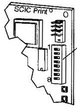

SMART,MRL:001,002

Commande:Codes d'erreur
Actionner le commutateur DIP5
| Pas d'erreur enregistrée | |
| Circuit de sécurité ouvert | |
| Ouverture du circuit de sécurité pendant la course | |
| Erreur pendant la procédure normale de fermeture de la porte | |
| La porte se trouve en dehors de la zone de porte | |
| Bouton d'appel bloqués | |
| L'ascenseur ne démarre pas | |
| Panne de courant sur les cartes BIONIC | |
| Course trop long | |
| Position perdue | |
| Surchauffe | |
| Erreur pendant la procédure normale d'ouverture de la porte | |
| Coupure de l'alimentation principale | |
| L'ascenseur est en mode inspection | |
| L'ascenseur fonctionne avec une commande incendie | |
| L'enrigistrement des données est hors service | |
| Priorité à l'appel cabine | |
| L'ascenseur fonctionne sur courant de secours | |
| Bouton d'alarme actionné |